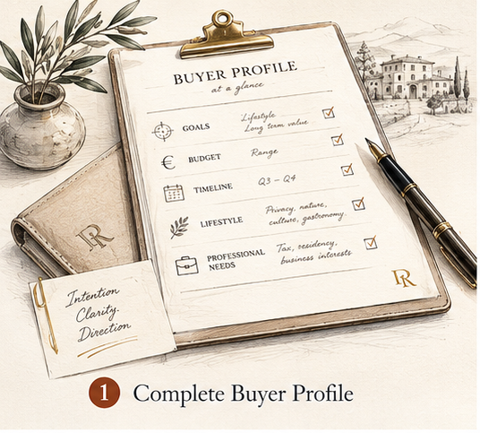
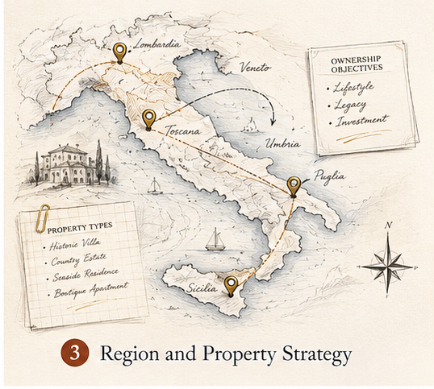
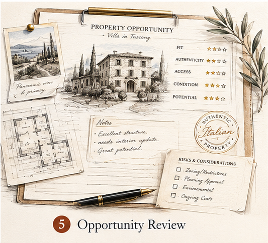

U.S.-based advisory perspective
Guidance framed for American buyers who may be new to the Italian real estate process.
Guidance for U.S. buyers exploring authentic Italian properties, lifestyle relocation, legacy ownership, and high-value real estate opportunities.
Buying in Italy requires more than finding a beautiful property. American buyers need guidance on location, lifestyle fit, ownership goals, local process, tax considerations, due diligence, and trusted professional coordination.
Guidance framed for American buyers who may be new to the Italian real estate process.
Region, lifestyle, property-type, and process context before the search becomes emotional.
Strategic buyer profiling before property selection, travel, offers, or introductions.
Confidential intake and coordination with licensed local professionals where needed.
Who This Is For
We help buyers clarify the right Italian property strategy before they spend time, capital, or social trust on poorly matched opportunities.
Americans considering a seasonal home in Italy for beauty, food, culture, and family use.
Buyers exploring full-time relocation, semi-retirement, services, accessibility, and local life.
Families seeking an estate, vineyard, countryside home, historic villa, or generational asset.
Buyers seeking rare, authentic, private Italian properties with careful due diligence.
Buyers evaluating lifestyle-driven acquisitions, hospitality potential, or mixed personal use.
Buyers interested in the Italian flat-tax regime who need professional verification.
This website provides advisory and buyer-profiling support. Tax, legal, immigration, and real estate brokerage matters must be confirmed by qualified professionals in Italy and/or the United States.
About / Advisory Approach
It begins with understanding the buyer. We use strategic buyer profiling to clarify goals, constraints, motivations, and decision criteria before opportunities are evaluated.
American buyers often arrive with a region, a dream property, or a beautiful listing. Our role is to slow the first decision down enough to understand lifestyle fit, intended use, risk tolerance, professional needs, and whether the search is aligned with the realities of the Italian market.
Italian Market Opportunity
Italy attracts U.S. buyers for lifestyle, culture, historic towns and countryside, coastal and lake destinations, food, wine, art, architecture, design, family legacy, and European living.
For some buyers, Italian real estate also offers relative value compared with certain U.S. luxury markets. For others, the appeal is less financial and more personal: authentic, one-of-a-kind properties with character, place, and long-term meaning.
Buyer Profiles
Each buyer profile changes the region strategy, professional team, risk evaluation, and opportunity filter.
Regions / Areas of Interest
These placeholders are designed to support future regional landing pages. No prices are shown without real current data.
Property Types
Historic, rural, coastal, lake, city, hospitality, and restoration assets each need different verification before a buyer commits.
Buyer Journey
The goal is to create a precise buyer profile and a realistic next-step plan before market engagement.
Collect goals, budget, timeline, lifestyle preferences, and professional needs.

Review the buyer's situation and identify realistic search parameters.
Match the buyer with suitable regions, property types, and ownership objectives.

Identify where legal, tax, immigration, financing, or technical professionals may be needed.
Evaluate properties based on fit, authenticity, risks, access, condition, and buyer goals.

Prepare a clear plan before travel, offers, negotiations, or professional engagement.
Strategic Buyer Profiling
This profile helps us understand your goals, budget, lifestyle preferences, and decision timeline before discussing suitable Italian real estate opportunities.
The next step is a private advisory review to determine whether your goals, budget, timeline, and property criteria are aligned with the Italian market.
Schedule a ConsultationPrivate Consultation
Use the buyer profile first, or request a private consultation to discuss whether your goals, budget, timeline, and property criteria are aligned with the Italian market.
Buyer profile information is intended only for advisory review and follow-up. Do not submit Social Security numbers, passport numbers, bank account details, sensitive documents, or confidential third-party records through the initial form.
This website is for preliminary buyer profiling and general information only. Use of this website does not create a brokerage, attorney-client, tax advisory, immigration advisory, investment advisory, or fiduciary relationship.
Not legal, tax, immigration, or investment advice. Real estate brokerage, legal, tax, immigration, financing, technical, and investment matters must be confirmed with qualified licensed professionals in Italy and/or the United States.